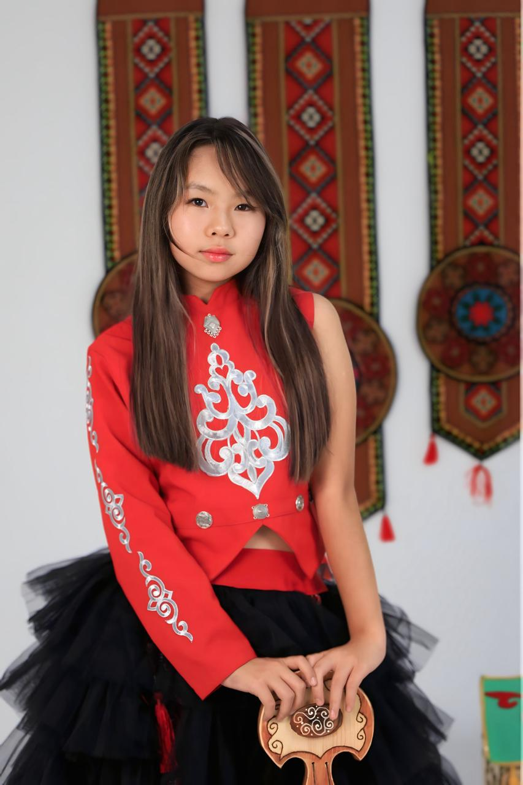

Привет! Я Айару.
Мне 11 лет, я живу в Алматы. Я пою, играю на домбре и фортепиано, снимаюсь в кино, сериалах и рекламе.
Я обладательница многочисленных дипломов, медалей и гран-при по вокалу. Мне нравится выходить на сцену и перед камеру, а ещё — узнавать новое: учу языки, рисую и делаю оригами.
ИмяАбдолла Айару
Дата рождения30 июля 2014
Рост157 см
ГородАлматы, Казахстан
Театрне выступала
Хобби
- Пение
- Домбыра
- Фортепиано
- Рисование
- Поделки из бумаги
- Оригами
- Иностранные языки
Курсы
- Вокал
- Домбыра
- Фортепиано
- Английский язык
- Математика
- Актёрское мастерство
